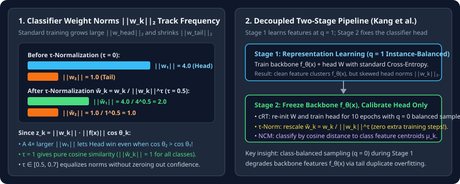

Two-Stage Decoupling: Representation Learning vs. Classifier Calibration (cRT and $\tau$-Normalization)
Separate backbone feature learning from linear classifier calibration, see why head classifier weights grow larger $\ell_2$ norms $\|w_k\|_2$, and compare cRT, NCM, LWS, and $\tau$-normalization.
When you train a deep network end-to-end with class-balanced oversampling ($q=0$) or heavy tail loss weights ($\alpha_k=1/n_k$), are you improving the backbone representation $f_\theta(x)$ or just fixing the final linear classifier $W$? Kang et al. (ICLR 2020) tested both parts separately and uncovered a surprising result: instance-balanced training ($q=1$) learns the highest-quality feature extractor $f_\theta(x)$, and almost all of the long-tailed accuracy drop sits inside the final linear layer $z_k=w_k^\top f_\theta(x)+b_k$.
1. Why classifier weight norms $\|w_k\|_2$ grow with class count $n_k$
Write the logit for class $k$ in terms of the classifier vector norm $\|w_k\|_2$, the feature norm $\|f_\theta(x)\|_2$, and the angle $\theta_k$ between them:
Now inspect the gradient of the cross-entropy loss with respect to class $k$’s classifier weight vector $w_k$ over a mini-batch $\mathcal B$:
- Head class ($n_1\gg 1$): Appears in almost every mini-batch, receiving frequent positive pulls along its feature cluster that grow $\|w_1\|_2$.
- Tail class ($n_K\ll 1$): Rarely appears as $y_i=K$, so in $99\%$ of mini-batches $w_K$ only receives negative pushes $+p_{i,K}f_\theta(x_i)$ and weight decay—shrinking $\|w_K\|_2$ to a fraction of $\|w_1\|_2$.
Because $z_k$ multiplies $\cos\theta_k$ by $\|w_k\|_2$, a head class with $\|w_1\|_2=4.0$ beats a tail class with $\|w_2\|_2=1.0$ even when the test feature $f_\theta(x)$ points much closer to the tail direction ($\cos\theta_2=0.80$ vs. $\cos\theta_1=0.25$):

2. Four ways to calibrate the classifier head with $f_\theta(x)$ frozen
Once Stage 1 finishes training the backbone $f_\theta(x)$ with standard instance-balanced cross-entropy ($q=1$), freeze $\theta$ and apply one of four Stage 2 head calibrations:
Check how $\tau\in[0,1]$ in $\tau$-normalization fixes the worked example above ($\|w_1\|_2=4.0,\cos\theta_1=0.25$ vs. $\|w_2\|_2=1.0,\cos\theta_2=0.80$) at $\tau=0.5$:
3. Questions worth answering
At $\tau=0$, $\|w_k\|_2^0=1$, leaving the original uncalibrated weights unchanged. At $\tau=1$, $\tilde w_k=w_k/\|w_k\|_2$ has unit norm $\|\tilde w_k\|_2=1$ for every class, turning the linear layer into a pure cosine-similarity classifier.
Because each class centroid $\mu_k$ is an average over class $k$’s normalized features and is normalized to unit length $\|\mu_k\|_2=1$, making its norm completely independent of whether $n_k=10{,}000$ or $n_k=10$.